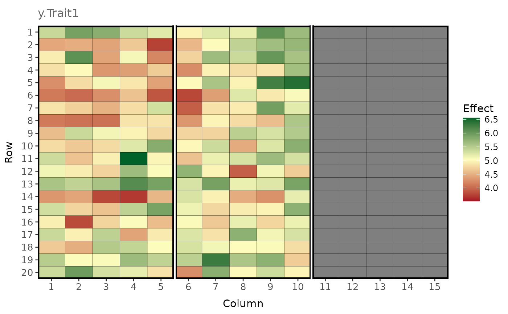

Generate phenotypes - Combine genetic values and plot errors
Source:R/make_phenotypes.R
make_phenotypes.RdCreates a data frame of phenotypes by combining genetic values with plot errors generated with the function field_trial_error. Requires genetic values generated with the functions compsym_asr_output or unstr_asr_output, or any data frame matching the description below.
Usage
make_phenotypes(
gv.df,
error.df,
design.df = NULL,
randomise = TRUE,
return.effects = FALSE
)Arguments
- gv.df
A data frame of genetic values. Must contain the columns 'env', genotype 'id', 'rep', and the genetic values for each trait.
- error.df
A data frame of plot errors. Must contain the columns 'env', 'block', 'col', 'row', and the plot errors for each trait.
- design.df
A optional data frame of frequencies for generating incomplete block designs. Must contain the columns 'env', 'id', and 'nreps' indicating the number of replicates per individual for each environment.
- randomise
When
TRUE(default), genotypes are randomly allocated to plots according to a randomized complete (or incomplete) block design.
Note: Other experimental designs are being implemented and should be generated externally.- return.effects
When
TRUE(default isFALSE), a list is returned with additional entries containing the genetic values and plot errors for each trait.
Value
A data frame with columns 'env', 'block', 'column', 'row', genotype 'id', 'rep', and
the phenotypes for each trait. When return.effects = TRUE, a list is returned with additional
entries containing the genetic values and plot errors for each trait.
Examples
# Generate and visualise phenotypes by combining the genetic values and plot errors provided
# in the two example data frames gv_df_unstr and error_df_bivar.
pheno_ls <- make_phenotypes(
gv.df = gv_df_unstr,
error.df = error_df_bivar,
randomise = TRUE,
return.effects = TRUE
)
plot_effects(
df = pheno_ls$pheno.df[pheno_ls$pheno.df$env == 1, ],
effect = "y.Trait1",
labels = TRUE,
)
